Flags that heal and optimize their own rollouts.
You ship a change to 10% of users. Switchboard watches what each variant does. If the new one starts erroring, it rolls back before anyone is paged. If it converts better, it drafts the next ramp step. Every change, human or AI, is versioned, audited and reversible.
- 0.68 ms p50 evaluation
- 507 conformance vectors
- 12 MCP tools for agents
- Postgres only: no Redis or message broker required
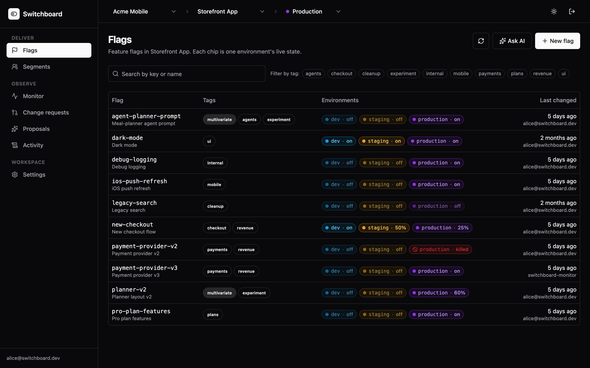
new-checkout is on in dev, 50% in staging and 25% in production. payment-provider-v3 was last changed by switchboard-monitor.Up in one command. The first person in owns it.
Self-hosting is one Compose file. On a self-hosted instance the first person to sign in creates the organization, and everyone after that joins by invitation. On a hosted instance, anyone can create their own.
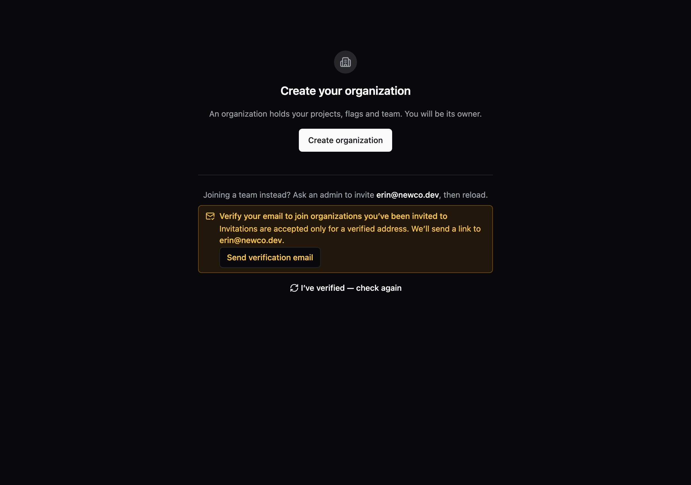
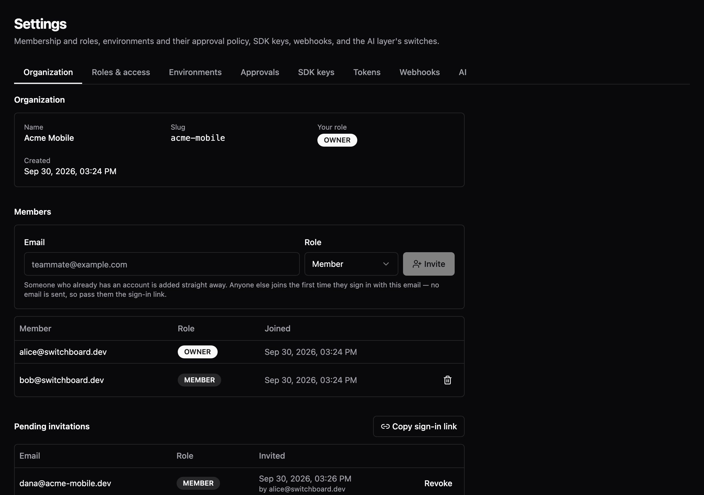
Who sees what on first sign-in
Mirrors OrgCreationPolicy# .env for docker-compose.prod.yml SWITCHBOARD_ORG_CREATION=bootstrap # or open POSTGRES_PASSWORD=… # no default, on purpose
Technical details
Under bootstrap, POST /api/orgs takes a Postgres advisory lock and succeeds only while no organization exists, so two people racing to be first get exactly one success. GET /api/users/me reports canCreateOrg, which is what the dashboard uses to pick the screen. An invitation to an address that already belongs to a verified account adds them immediately. Otherwise it waits until that person proves the address, so nobody can pre-register a colleague's email and walk in.
One question, answered the same way everywhere: what does this user get?
Rules, reusable segments and per-user targets decide who gets what. Evaluation always walks the same ladder and stops at the first step that decides, so you can predict the answer from the screen.
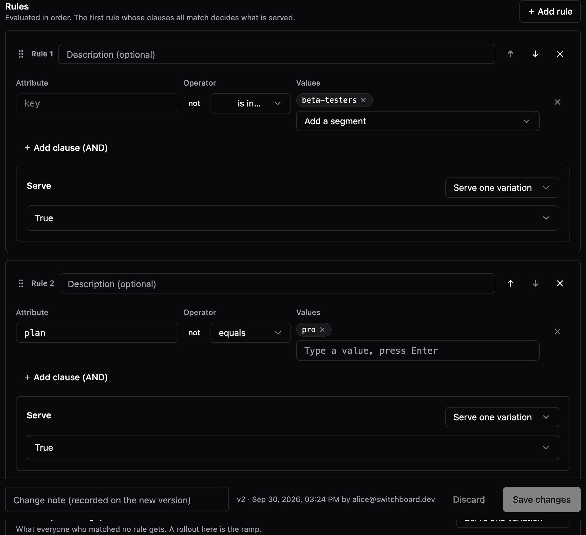
pro-plan-features in production: rule 1 matches the beta-testers segment, rule 2 matches plan = pro, everyone else gets false.Evaluate pro-plan-features
Real evaluator · spec §2Technical details
The ladder is spec/evaluation.md §2: kill switch → flag off → individual targets → rules in order → fallthrough. The server, the Java SDK and the Node SDK all run it. The simulation on this page runs a port of it that passes the spec's stickiness, ramp, precedence, segment and clause vectors. A missing attribute fails a clause without erroring, an unknown flag returns your default at HTTP 200, and the reason code (RULE_MATCH, KILL_SWITCH…) travels with every answer.
Ramp from 10% to 25% and nobody who had it loses it.
Every user lands in a fixed bucket from 0 to 9,999 per flag. Raising the percentage only moves the boundary, so a wider rollout adds people and never reshuffles the ones already in.
200 users, bucketed for real
md5 bucketing · spec §5Hover a dot to see its bucket. Switch the flag to see a different, independent split.
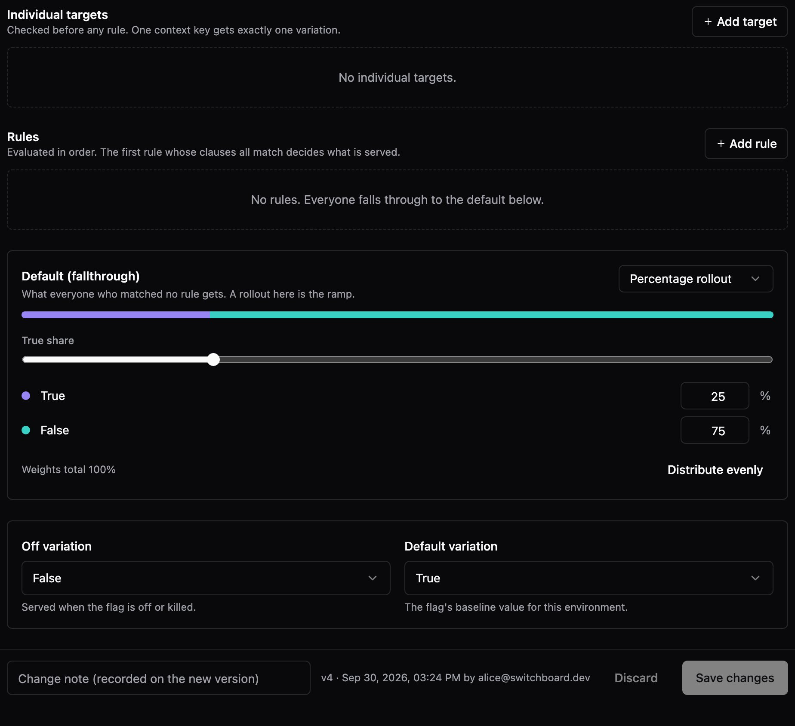
Technical details
bucket = int(md5(flagKey + ":" + contextKey)[0:8], 16) % 10000, and a variation with weight w owns exactly w×100 buckets. The flag key salts the hash, so two 50/50 flags don't pick the same unlucky half. Across user-1…user-1000 a 50/50 new-checkout splits 512/488, the figure the spec states and this page's port reproduces. MD5 is part of the cross-language contract, chosen because every language has it, not for security.
Every change is a version. Rollback is a new one.
Each save writes a numbered version, an immutable snapshot and an audit row in one transaction. Rolling back never rewrites history: it writes the old config as a new version, which you can roll back too. The kill switch stops a flag in one click without touching its targeting.
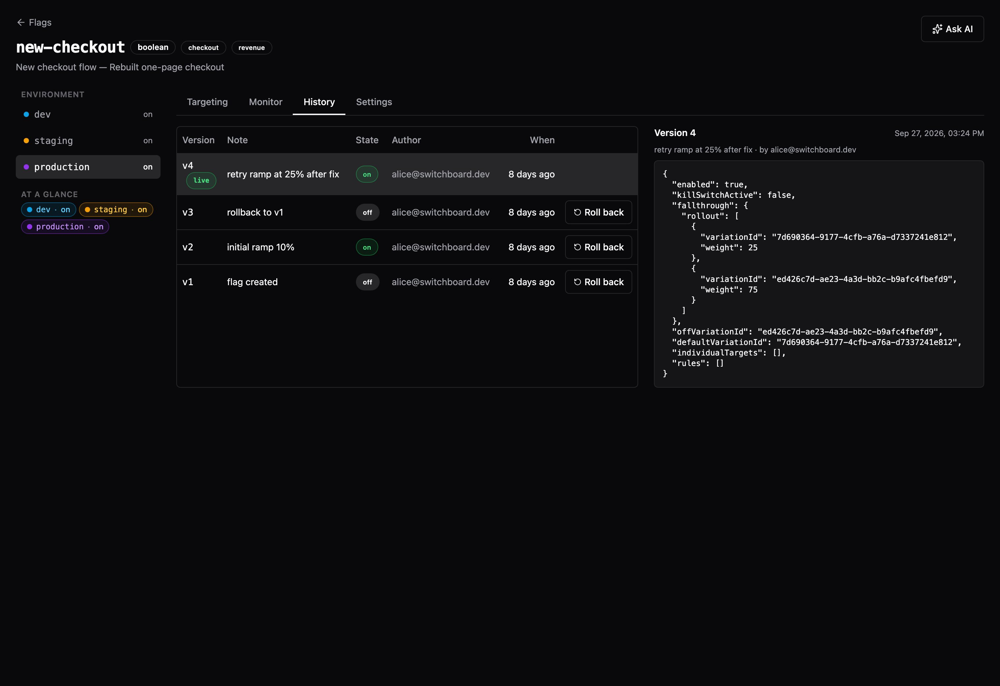
Try to break the history
Mirrors FlagTargetingServiceTechnical details
Every flag write, including AI-applied and approval-applied ones, goes through one path: SELECT … FOR UPDATE → check expectedVersion (409 if stale) → write the head at version+1 → store an immutable snapshot → write the audit row → bump the environment's state_version → pg_notify after commit. Two people editing the same flag can't silently overwrite each other; the second one is told.
A change reaches every SDK without a restart or a poll.
SDKs download the environment once, evaluate locally with no network call per flag check, and hold an open stream for changes. More backend instances learn about a change the same way, through Postgres, so Postgres is the only infrastructure you need. The cache sits behind a pluggable provider, so a shared cache like Redis can be added later if one instance stops being enough.
Pull a kill switch, watch it propagate
Animated · real frame formatThe animation is paced for the room. Frame names and fields are what GET /api/stream sends: a put on connect, a patch per change with the stateVersion as its event id, and a ping every 15 seconds.
Technical details
After commit, the writer calls pg_notify. Every instance LISTENs, evicts exactly the cache entries the change touched, and pushes a patch to its own stream subscribers. Reads are served from in-process caches, so the cache TTLs are only a backstop against a dropped notification. A reconnecting SDK sends If-None-Match on the bootstrap and gets a 304 if nothing changed.
Java, Node, OpenFeature, or one HTTP call.
The Java and Node SDKs evaluate in your process and keep working through a Switchboard outage. OpenFeature providers in Go, Python, .NET and others connect over OFREP. Anything else makes one POST. Install guides: Java SDK, Node SDK.
Technical details
Evaluation behaviour is spec-first: spec/evaluation.md plus machine-readable vectors. The Java core (evaluation/, zero dependencies) is compiled into both the server and the Java SDK, and the Node SDK runs the same vectors in its tests. A live check asserts the SDK's in-process answers equal the server's for the same flags and contexts. That check once caught the SDK rejecting every real bootstrap payload over a wire-format detail no hand-written fixture contained.
Your service says what happened. Switchboard works out which variant caused it.
Two kinds of event, joined on the user. The SDK records which variation each user was served, with no code from you. Your code calls track() when something happens: a failed payment, a completed checkout. No log scraping and no APM integration to set up.
// checkout service, Java SDK boolean useV3 = switchboard.booleanValue("payment-provider-v3", false, EvalContexts.builder(userId).build()).value(); // ↑ the SDK records the exposure itself: user, flag, variation try { (useV3 ? v3 : v2).charge(order); switchboard.track("conversion", userId); // it worked } catch (PaymentException e) { switchboard.track("error", userId); // it didn't throw e; }
Built in, or your own
error and conversion exist in every project. Add any other key (checkout.abandoned, latency.slow) with a metric definition that says which direction is good, and the monitor judges it too.
Watch the loop
Real bucketing, wire format and statisticYour service
POST /api/events/eval
POST /api/events/metrics
Technical details
- Exposures come from the SDK: one per evaluation of a known flag, batched in the background and sent every 10 seconds (at most 500 per request), with a final flush on shutdown. If you evaluate over REST or OFREP, post them to
/api/events/evalyourself. - Outcomes are
{contextKey, metricKey, value, occurredAt}sent to/api/events/metrics, bytrack()or directly. They need a server key; a client-side key is refused. - The join is on the context key. Each hour the monitor counts distinct users per variation, and how many of them had the outcome, since the last change to the traffic split. Those counts feed the test in the next section.
- Outcomes belong to a user, not a flag. An error reported anywhere counts against every flag that user was exposed to. Report it from the code the flag controls: unrelated errors land on both variants equally, so they dilute the difference and slow detection, as the checkbox above shows.
A variant starts erroring. Switchboard rolls it back itself.
Your app reports errors and conversions against the same user it evaluated. Each hour the monitor asks whether the new variant is doing worse. When the evidence is strong enough, it writes a rollback through the same audited path a person would.
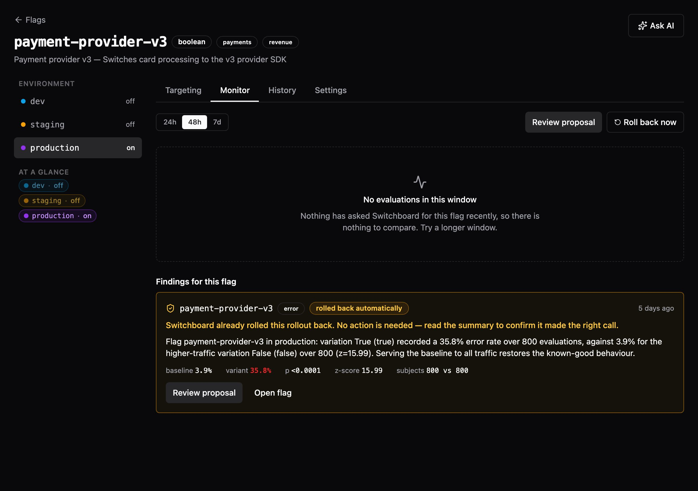
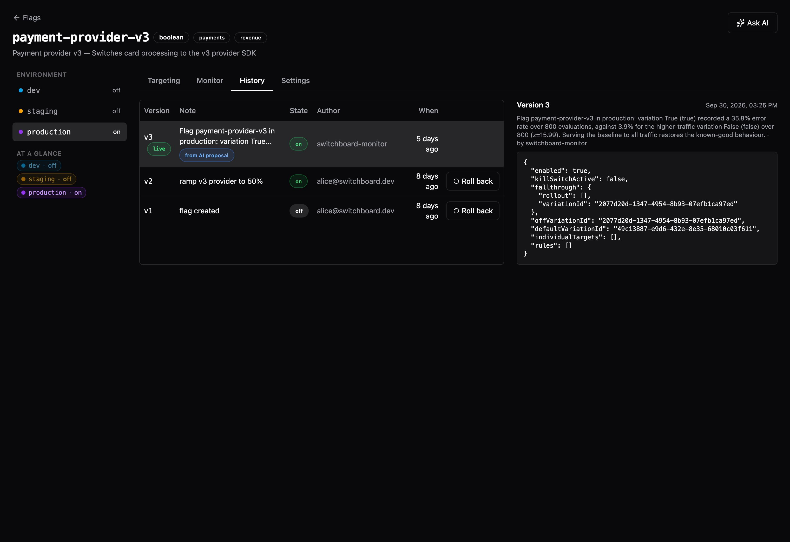
switchboard-monitor, not a person, with its reasoning as the version note. It can be rolled back like any other version.Watch the evidence build
Real statistic · checked against the JavaWhy not just check p < 0.05 every hour?
Simulated A/A rolloutsBoth variants are identical here, so every rollback would be a false alarm. Each rule looks once an hour for 48 hours at 5% baseline errors, 100 users per hour per variant.
The dashed line is the 5% false-alarm rate each rule is supposed to have. A normal significance test is only valid if you look once, so checking hourly fires far more often. Switchboard's evidence score stays under the line however often it's checked.
Technical details
- The statistic is a mixture sequential probability ratio test (
MixtureSequentialTest.java; the reasoning is in the AI layer docs). It produces an e-value: under "no difference" it is a supermartingale, so by Ville's inequality the chance it ever reaches 1/α is at most α, however often it's inspected. The scan interval doesn't change any decision. - Healing uses α = 0.05 (roll back at E ≥ 20) with τ = 0.01. Optimizing is stricter, α = 0.01 (E ≥ 100), because a wrong ramp is costlier than a wrong rollback.
- Before comparing, it counts distinct users (not events), waits for 200 per variant, checks traffic arrived in the configured split (a sample-ratio-mismatch check that stops the comparison and alerts a person), and corrects for testing many variants at once.
- Evidence restarts whenever the traffic split changes. Auto-rollback is opt-in per organization; otherwise the monitor files the rollback as a proposal for a person to apply.
A variant converts better. Switchboard drafts the next ramp step.
The same monitor watches conversions. When the new variant is ahead with enough evidence, it proposes the next rung, 25 → 50 → 75 → 100%, and starts collecting fresh evidence at the new split.
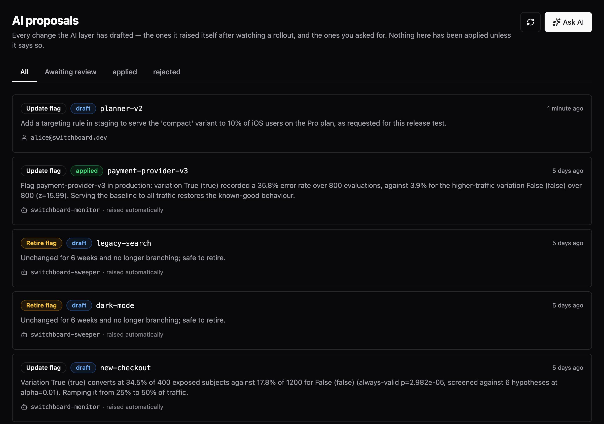
new-checkout converting at 34.5% vs 17.8% (always-valid p = 3×10⁻⁵), so a ramp from 25% to 50% awaits review.Climb the ladder
Real statistic · α = 0.01Conversion 18% on the current flow vs 30% on the new one (the seeded new-checkout numbers), 400 users an hour. Each approved step resets the evidence, as the monitor does when the split changes.
Technical details
Optimize findings use the one-sided e-value on conversions with τ = 0.02 and α = 0.01. With several variants or flags in an environment, findings are screened together (e-BH) so a busy environment doesn't produce more false ramps. Proposals are typed diffs; applying one goes through the same versioned write, and an environment that requires approval turns it into a change request. The same machinery retires flags left at 0% or 100% for weeks, with a removal checklist.
Describe the change. Review the diff. Nothing applies until you do.
Technical details
Claude is constrained to a single tool whose schema is the flag-change format, so the answer is always a typed, validated change rather than free text. It lands as a proposal with a before/after diff. Applying it is an ordinary versioned write, subject to approvals like any other. Without an Anthropic key the feature explains itself rather than failing; everything else in the AI layer runs without one.
Production changes can require a second pair of eyes.
Grant roles at organization, project or environment level. Turn on approvals for an environment and every save there becomes a change request. The kill switch still works immediately, because an emergency stop behind a review queue turns an incident into an outage. That bypass is audited too.
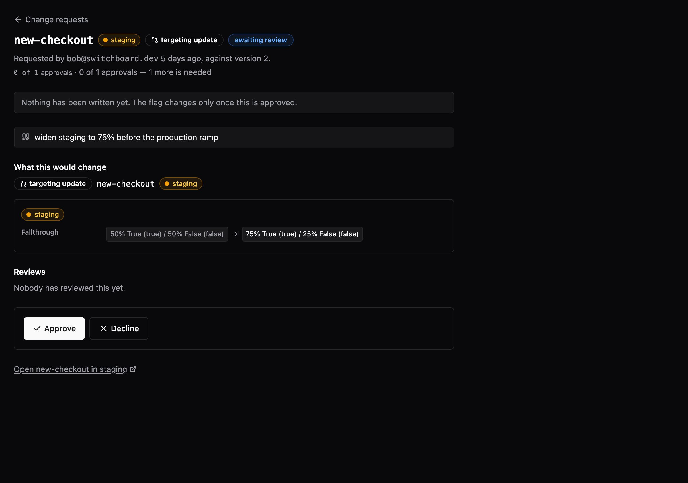
202 and waits here. Nothing has been written yet.An approval, step by step
Real flow- Bob saves
new-checkoutin staging: 50% → 75% - Staging requires 1 approval, so the API answers
202 Acceptedwith a change request - Alice reviews the diff. Bob can't approve his own
- Alice approves. The threshold is met, so the change is applied as a new version through the usual write path
- Audit:
CHANGE_REQUEST_OPENwhen Bob saved,CHANGE_REQUEST_APPLYwhen it applied
Seven roles, twelve permissions
From the V2 migrationClick a role to highlight it. Roles granted at several scopes combine. Custom roles are database rows, not code.
Everything is on the record, and can leave the building.
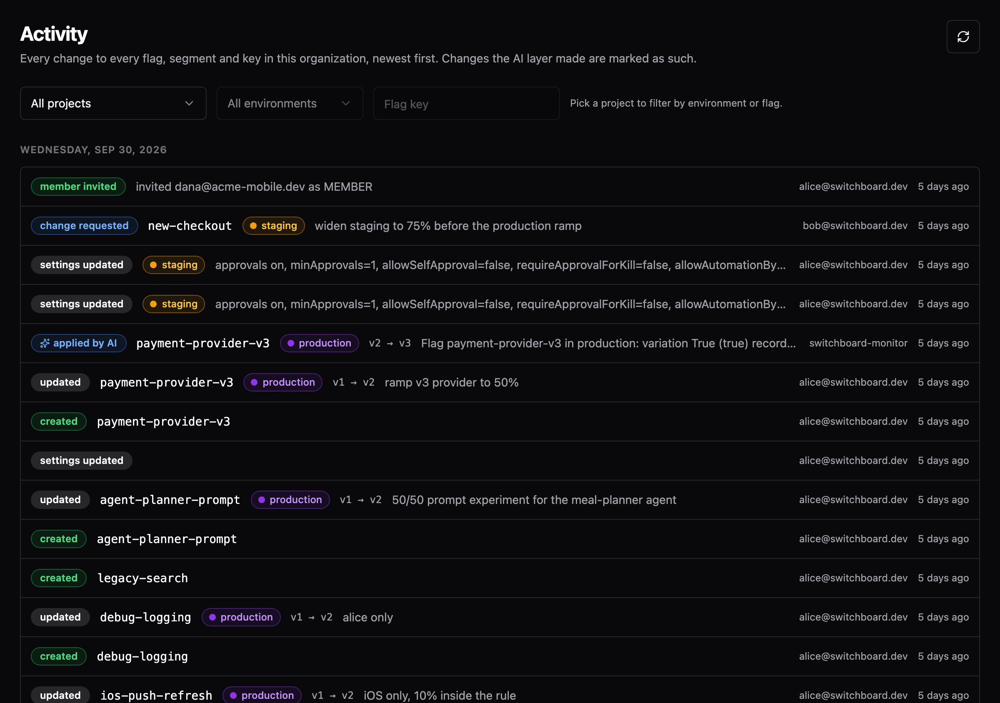
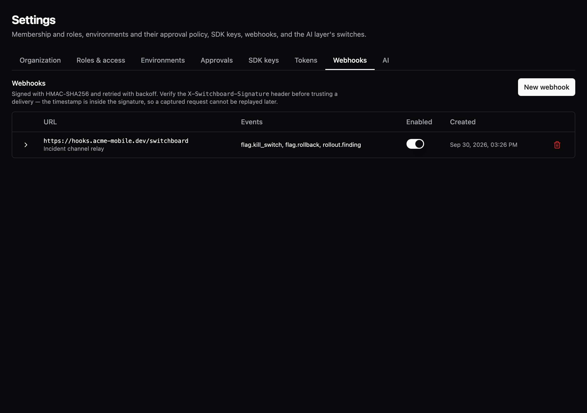
Signed webhooks
HMAC-SHA256 over timestamp.body, filtered by event, project or environment, retried with backoff, with a delivery log.
// X-Switchboard-Signature: t=1735689600,v1=9f86… const [t, v1] = parse(header); const ok = v1 === hmac('sha256', secret) .update(`${t}.${rawBody}`).digest('hex');
Audit export
Stream the whole audit log as NDJSON or CSV for your SIEM: GET /api/orgs/{org}/audit/export?format=csv.
SCIM provisioning
Your identity provider creates and deactivates people through SCIM 2.0. Deactivation keeps history instead of deleting it.
Personal access tokens
sb_pat_… tokens act as you, with exactly your permissions, for scripts, CI and AI agents.
Verified-email invitations
Invitations, role grants by email, account linking and SCIM all refuse an address nobody has proven they own.
Your identity provider
OIDC (Okta, Entra, Auth0, Keycloak…) or Firebase. Several can be active at once while you migrate.
Give an AI assistant the controls, and the same guardrails.
The MCP server gives Claude and other agents twelve tools: list flags, read rollout stats, change targeting, pull a kill switch, approve requests. It acts as you, through a personal access token, with your permissions. It can't claim a change happened when it only queued for review. Set it up.
An on-call conversation
Replayed · real tool names and responses12 tools
list_projects · list_flags · get_flag · update_targeting · set_kill_switch · list_versions · rollback · list_change_requests · approve_change_request · list_anomalies · get_rollout_stats · list_audit
Gate an AI agent with a flag
Use the agent run id as the context key and put the agent name and version in attributes. A prompt revision becomes a multivariate flag the monitor can ramp or roll back. The seeded agent-planner-prompt flag does exactly this: prompt v2 completes meal plans 42% of the time vs 30%.
Sub-millisecond at the median on every cached path.
Measured at 500 requests a second on the server's own clock, not claimed. The flag list went from 73.8 ms to 4.8 ms at p99 once it joined the caches.
Server-side latency by path
docs/PERFORMANCE.mdTechnical details
Evaluation, the bootstrap payload, SDK-key resolution, permissions and the dashboard's flag list are all served from memory. Every write that could change one of them evicts it on every instance through NOTIFY, so the cache TTLs are a backstop, not a staleness budget. Benchmarks run against the packaged jar with the full JIT, a separate database, and the rate limiter off; the write-up states the rig and where the numbers stop being trustworthy.
Postgres, the backend and the dashboard. That's the whole stack.
# 1. configure cp .env.prod.example .env # set POSTGRES_PASSWORD and your identity provider # 2. run: migrations apply on first boot docker compose -f docker-compose.prod.yml up --build -d --wait # 3. sign in: the first person creates the organization open https://switchboard.example.com
One image, any environment
The dashboard reads its configuration at container start, so the same built image serves staging and production.